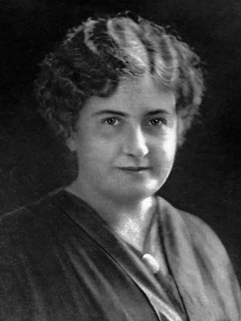

Diversas áreas científicas contribuem diretamente para a educação. A Psicologia estuda aspectos do comportamento e da aprendizagem; a Medicina e a Neurociência ajudam a compreender o desenvolvimento humano; a Sociologia analisa a influência da sociedade sobre a educação; e a Pedagogia pesquisa métodos, práticas e formas de organizar o ensino.
Por meio dessas áreas, a educação pode ser estudada e aperfeiçoada. Novas pesquisas permitem compreender dificuldades de aprendizagem, avaliar metodologias e desenvolver formas de ensino mais adequadas às diferentes necessidades dos estudantes.
A observação é uma parte importante tanto da ciência quanto da educação. Ao observar como um estudante aprende, quais dificuldades apresenta e quais atividades despertam seu interesse, é possível compreender melhor seu desenvolvimento.
Muitas mudanças na educação surgiram justamente da observação do comportamento dos alunos. Pesquisadores e educadores passaram a questionar métodos tradicionais e desenvolver novas propostas baseadas em estudos e experiências realizadas dentro e fora das escolas.
Durante muito tempo, o ensino foi baseado principalmente na transmissão de informações do professor para o aluno. Com o avanço dos estudos sobre educação, surgiram métodos que passaram a valorizar mais a participação ativa dos estudantes.
Atividades práticas, pesquisas, experiências, debates e resolução de problemas permitem que o aluno participe da construção do próprio conhecimento. Nesse modelo, aprender não significa apenas memorizar informações, mas também compreender, questionar e descobrir.
A educação também possui um papel importante na transformação da sociedade. O acesso ao conhecimento amplia oportunidades, permite que mais pessoas participem de debates e contribui para diminuir desigualdades.
Uma sociedade que investe em educação também fortalece sua capacidade de produzir ciência, tecnologia e inovação. Afinal, os pesquisadores, professores, médicos, engenheiros e demais profissionais do futuro começam sua formação dentro da escola.
Ao longo da história, diversas mulheres contribuíram para modificar a maneira como entendemos a educação. Nísia Floresta, Maria Montessori e Helena Antipoff são três exemplos importantes.
Embora tenham vivido em contextos diferentes, elas questionaram limitações existentes em suas épocas e defenderam novas possibilidades para o ensino. Seus trabalhos envolveram temas como direito à educação, desenvolvimento infantil, autonomia, Psicologia, inclusão e formação de professores.
Nísia Floresta concentrou grande parte de sua atuação na defesa da educação feminina e do acesso das mulheres ao conhecimento.
Maria Montessori utilizou sua formação científica e a observação das crianças para desenvolver um método educacional baseado na autonomia e no desenvolvimento individual.
Helena Antipoff aproximou Psicologia e Educação, estudando as diferenças entre os estudantes e contribuindo para novas formas de atendimento educacional.
As três demonstram que transformar a educação exige observar problemas, questionar práticas existentes e buscar novas soluções.
Dizer que “Educação também é ciência” significa reconhecer que os processos de ensino e aprendizagem podem ser pesquisados, analisados e melhorados.
A educação utiliza conhecimentos científicos para compreender os estudantes e também produz novos conhecimentos por meio de pesquisas. Ciência e educação, portanto, não são áreas isoladas: uma contribui para o desenvolvimento da outra.